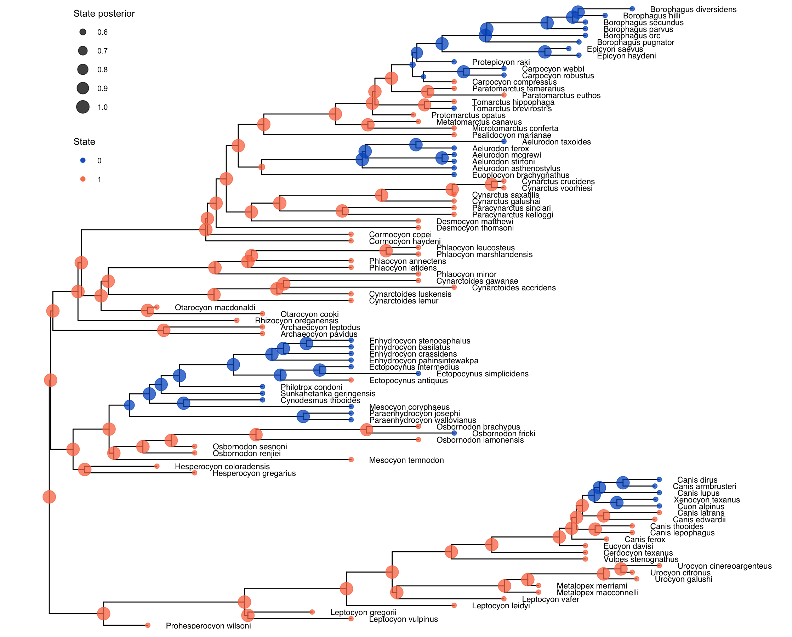

This tutorial describes how to apply state-dependent diversification models to trees including fossil data.
To that end, dnCDBDP includes the option of a serial sampling rate, combining SSE models with the fossilized birth-death (FBD) process (Stadler 2010; Heath et al. 2014).
For more details on the theory behind these models, please see the SSE theory tutorial,
the FBD tutorial, or (Beaulieu and O’Meara 2023) for a full mathematical derivation.
The tutorial will explain how to build both a BiSSE (Maddison et al. 2007) and HiSSE (Beaulieu and O’Meara 2016) models to investigate the effect of hipercarnivory on canid extinction rates. It was heavily based on the BiSSE tutorial, and users are highly encouraged to complete that tutorial before this one.
We provide the data files which we will use in this tutorial:
0 = hypercarnivorous, 1 = non-hypercarnivorous, which can mean either meso- or
hypocarnivorous. These categories signify the percentage of vertebrates in an animal’s diet,
correspoding to >70%, between 30 and 70%, and less than 30%, respectively (though sources
differ on the exact percentages). We could use the MuSSE model (missing reference) to
analyze the rates for meso- and hypocarnivores separately, but given the relatively small size
of the tree, and our main interest on the effects of hypercarnivory specifically, we simplified
the dataset.Create a new directory on your computer called
RB_fsse_tutorial.Within the
RB_fsse_tutorialdirectory, create a subdirectory calleddata. Then, download the provided files and place them in thedatafolder. You can then start ascriptsfolder to hold the script for this analysis, or use RevBayes interactively by runningrband adding the code described below one block at a time.
To investigate the effect of diet on the diversification of Canidae, we will start by setting up a BiSSE model, which
assumes two rate categories for speciation, extinction, and fossil sampling, depending on a species’ diet.
If you open the data file canidae_diet.nex in your text editor, you will see the coded
characters for each species in our tree. For example, the dire wolf (Canis dirus) was
hypercarnivorous, so it is set to state 0. Coyotes (Canis latrans), on the other hand, are mesocarnivores, while
the extinct Archaeocyon pavidus (a member of the extinct Borophaginae subfamily)
and living grey foxes (Urocyon cinereoargenteus) are hypocarnivores (all of these set to state 1).
Longstanding hypotheses on the effects of extreme specialization would lead to an a priori hypothesis that
hypercarnivorous canids have higher extinction rates, which we can then test by comparing the posterior distributions of
the extinction rate for each state, $\mu_0$ and $\mu_1$, under BiSSE.
Note that this analysis, like most tutorials, should be seen as illustrative only. The tree used here is generally too small to achieve reliable SSE estimates, and the lack of sampled ancestors likely means our estimates will be biased (Beaulieu and O’Meara 2023). Work is already underway to estimate a more complete canid tree, which will then allow for more reliable SSE analyses. For the moment, consider this as merely illustrative as to how you can set up your own serially-sampled SSE analyses.
Here, since we are using a fixed tree, it is considered data. So we first read our dated phylogeny.
observed_phylogeny <- readTrees("data/canidae_tree.nex")[1]
Then, we read the diet data for our canids.
data <- readCharacterData("data/canidae_diet.nex")
We then create a helper variable to record the number of states used here. In this case, 2 (hypercarnivorous and non-hypercarnivorous).
num_states <- 2
We also create a helper variable to hold the value of the root age of the tree.
root <- observed_phylogeny.rootAge()
Finally, we initialize a variable for our vector of moves and monitors.
moves = VectorMoves()
monitors = VectorMonitors()
The first step for specifying our BiSSE model is creating variables to hold the priors on diversification and
fossil-sampling rate. To keep things simple, we will set speciation and extinction priors to a log-uniform distribution,
representing a relatively agnostic prior belief about these rates. For fossil-sampling rate, we will set an exponential
prior, a slightly more informative distribution, since fossil-sampling is often a more difficult rate for the model
to estimate. We will set these priors using a for loop on num_states (making the code easy to modify for a
different character with a different number of states), and also create nodes for the diversification rates, for
easy comparisons later.
for (i in 1:num_states) {
# loguniform prior on speciation
speciation[i] ~ dnLoguniform( 1E-6, 1E2)
moves.append( mvSlice(speciation[i], window = 0.1, weight = 1.0, search_method = "stepping_out") )
# and on extinction
extinction[i] ~ dnLoguniform( 1E-6, 1E2)
moves.append( mvSlice(extinction[i], window = 0.1, weight = 1.0, search_method = "stepping_out") )
# exponential prior on fossil sampling
fossil_sampling[i] ~ dnExp(5)
moves.append( mvSlice(fossil_sampling[i], window = 0.1, weight = 1.0, search_method = "stepping_out") )
# set a variable to monitor diversification rates
diversification[i] := speciation[i] - extinction[i]
}
Note that we are using mvSlice instead of the more popular mvScale move. mvSlice is a relatively new addition
to RevBayes that functions as an mvScale move that searches for an optimal jump size to improve mixing. This allows,
on average, faster convergence with a lower number of moves.
Next we will specify the transition rates, $q_{01}$ and $q_{10}$. These represent the rate with which species
transition anagenetically between hypercarnivorous and non-hypercarnivorous lifestyles. We could set up uninformative
priors like we did for speciation and extinction, but to again keep things simple we will specify an exponential prior
on each rate, with a mean representing 10 character state transitions throughout the tree, on average. This allows for
reasonably frequent transitions, while also leaving a good amount of uncertainty. We will once again use a for loop
in this case over num_states * (num_states - 1), so that the code can be easily modified for analyses with non-binary
characters.
rate_pr := observed_phylogeny.treeLength() / 10
# loop through number of transition rates (3 * 2 = 6 in this case)
for ( i in 1:(num_states * (num_states - 1)) ) {
# set it to an exponential prior
q[i] ~ dnExp(rate_pr)
moves.append( mvSlice(q[i], window = 0.1, weight = 1.0, search_method = "stepping_out") )
}
Here, q[1] is equivalent to $q_{01}$, the rate with which hypercarnivorous species transition to non-hypercarnivorous
lifestyles. q[2] is equivalent to $q_{10}$, the rate of the opposite transition.
To use these rates with dnCDBDP, we need to make a rate matrix, which we do using fnFreeK. Since the character in
this case is binary, we could instead use fnFreeBinary, but in this way we again allow the script to be modified
for use with other characters with minimal modifications.
rate_matrix := fnFreeK( q, rescaled = false)
The rescaled argument is there to be used with DNA evolution matrices, where we want the total transition rates
to be normalized to 1. Here, we want the rates in the same units as the diversification and sampling rates, so
we set rescaled = false.
Next, we need to create a variable to hold the root frequency for each state, root_frequencies (often termed $\pi$). root_frequencies is a vector of size
num_states, with root_frequencies[1] being the probability that the root (i.e. the common ancestor of all species in
the dataset) was at state 0 (hypercarnivorous), and respectively for root_frequencies[2] and state 1. In this step, we
could make use of past studies about the ancestral state of canid diets, and e.g. set a higher prior probability
for state 1 than state 0, because it is likely that the first canids were not hypercarnivorous. However,
to illustrate a useful prior for the case where we have no prior knowledge on the root state, we will
set it to a prior. The Dirichlet distribution is a
multi-dimensional generalization of the Beta distribution. We will set the prior to a Dirichlet with parameters
all equal to 1, which is equivalent to setting a uniform distribution on the probability of each state at the root.
root_frequencies ~ dnDirichlet( rep(1, num_states) )
Once again, we set the number of states for our Dirichlet prior in the way to make it the most straightforward to
modify for a character with more states, by making use of the rep function. In the case of our binary diet data,
this would be equivalent to setting dnDirichlet( v(1, 1) ).
We will use a special move for objects that are drawn from a Dirichlet distribution
moves.append( mvDirichletSimplex(root_frequencies, weight = 2) )
All birth-death processes are conditioned on the probability a taxon is sampled at the present, usually termed
the extant sampling rate extant_sampling (often termed $\rho$). While dnCDBDP allows for extant_sampling to be dependent on states, we have no
reason to expect it to be in this case. Furthermore, since we know the exact number of canid species alive
today (barring some discussion on species delimitation), we know that our dataset has exactly 4 out of 36 canid
species. We can therefore set a constant node for extant_sampling, equal to that proportion.
extant_sampling <- 4 / 36
If you are unsure on the proportion of extant species present in your dataset, or if you have reason to believe
the trait of focus in your analysis could affect rho, you could create stochastic nodes for it, just as we did
for the fossil-sampling rate.
We now have all the parameters necessary for our BiSSE model. We can initialize our time tree using the dnCDBDP
function.
timetree ~ dnCDBDP( rootAge = root,
lambda = speciation,
mu = extinction,
psi = fossil_sampling,
Q = rate_matrix,
pi = root_frequencies,
rho = extant_sampling)
Since we are treating the tree as fixed, we need to attach this time tree node to our observed phylogeny. We do so
using the clamp method.
timetree.clamp( observed_phylogeny )
The tree is not our only data, however, and we also need to attach the observed character states. We can do so
using the clampCharData method.
timetree.clampCharData( data )
This completes the model setup.
First, we need to create a workspace object that represents our entire model. The model function can be used,
taking any node in your model and traversing the entire model by finding the connections between that node and
the others. We give it the timetree node for simplicity.
mymodel = model(timetree)
We need to create monitors to record the important steps in our Markov Chain. First, we set up a monitor to store
all numerical variables in our model, e.g. speciation and extinction.
monitors.append( mnModel(filename="output/canidae_diet_bisse.log", printgen = 1000) )
If we are interested on the evolution of diet throughout our canid tree, we can set an ancestral state estimation monitor. This will then allow us to analyze the estimated state at each node of the tree, and provide information on how canids have transitioned in and out of a hypercarnivorous lifestyle throughout the tree. This monitor is also particularly useful for HiSSE analyses, since it allows us to check the estimated hidden state for each species in the dataset.
monitors.append( mnJointConditionalAncestralState(tree = timetree,
cdbdp = timetree,
type = "Standard",
withStartStates = false,
printgen = 100,
filename = "output/canidae_diet_anc_states.log") )
Finally, we add a screen monitor to monitor the progress of the MCMC run.
monitors.append( mnScreen(printgen = 10000) )
Armed with our full model, and vectors of monitors and moves, we can use the mcmc function to create our MCMC
object.
mymcmc = mcmc(mymodel, monitors, moves)
In most RevBayes tutorials, we set the MCMC to run for a certain number of generations, using the generations
argument. This often requires users to have a prior idea of how long convergence will take, which could be
challenging.
Here we present an alternative, where one can instead set the MCMC to run until a certain set of stopping rules
have been met. Specifically, we use srMinESS to ensure the MCMC will run until all numerical parameters have
reached an effective sample size of 250 (see
the MCMC convergence assessment tutorial for more background on ESS and
other measures of convergence).
stopping_rules[1] = srMinESS(250, file = "output/canidae_diet_bisse.log", freq = 10000)
SSE models are time-consuming, and time-constraints when using institutional super-computers often mean you might
need to restart analyses. To that end, we can make use of checkpointing by specifying a checkpointFile argument
in the run method.
mymcmc.run(rules = stopping_rules, checkpointInterval = 1000, checkpointFile = "output/canidae_diet_bisse.state")
The MCMC can then be restarted from the checkpoint file by adding
mymcmc.initializeFromCheckpoint("output/canidae_diet_bisse.state")
before the run method.
To make use of the ancestral states sampled using mnJointConditionalAncestralState, we first need to summarize
the sampled values using the readAncestralStateTrace function.
anc_states = readAncestralStateTrace("output/canidae_diet_anc_states.log")
Then, ancestralStateTree can be used to summarize the ancestral state trace as a tree with the maximum a
posteriori (MAP) state and the posterior probabilities for each state at a given node.
anc_tree = ancestralStateTree(tree = observed_phylogeny,
ancestral_state_trace_vector = anc_states,
include_start_states = false,
file = "output/canidae_diet_anc_states_results.tree",
burnin = 0.1,
summary_statistic = "MAP",
site = 1)
Using TensorPhylo
TensorPhylo (May and Meyer) is a plugin that introduced an alternative general SSE function, the generalized lineage-heterogeneous birth-death-sampling process (
dnGLHBDSP).dnGLHBDSPprovides much of the same utility asdnCDBDPand other birth-death functions in RevBayes, being a generalization of BiSSE, HiSSE, and other SSE models, including serial-sampling. It allows for more homogeneous scripts, using the same function for multiple models, and it often leads to faster likelihood calculations thandnCDBDP. For more information ondnGLHBDSPand instructions on how to install TensorPhylo, see the Tensorphylo tutorial (need to add a link here when we have one).Only minor modifications are needed to use
dnGLHBDSPin our analysis. Throughout the rest of this box, we will only mention lines that must be changed compared to ourdnCDBDPscript. First, we need to load the TensorPhylo pluginloadPlugin("TensorPhylo", "/path/to/tensorphylo/build/installer/lib")Then, we need an extra helper variable representing the taxa in our tree.
taxa <- observed_phylogeny.taxa()All variables defined above will be used, and we will then pass them, together with
taxaandnum_states, todnGLHBDSP.timetree ~ dnGLHBDSP( rootAge = root, lambda = speciation, mu = extinction, phi = fossil_sampling, eta = rate_matrix, pi = root_frequencies, rho = extant_sampling, taxa = taxa, nStates = num_states)And we’re done! This should run, and achieve similar results to
dnCDBDP, while being slightly faster. Make sure to change the output, checkpointing, and ancestral state filenames if you run both analyses!
To visualize our rate and ancestral state estimates, we will make use of RevGadgets (Tribble et al. 2022), similar to the BiSSE tutorial. We will not copy that code here to avoid redundancy, since the procedure is the same.
First, let us take a look at our ancestral state results

These ancestral states largely agree with the ancestral state estimation in (Slater 2015), which is a good sign. The clusters of hypercarnivory are sensible considering the tree in question, and there are not a lot of internal nodes with uncertain states.
Note that there are reasonably few transitions to and from hypercarnivory (state 0), which should spell caution when interpreting the results of the model. This illustrates an important point about the signal for state-dependent diversification: the sample size for these analyses is not the number of species in a tree, but the number of state transitions present in that group’s history (missing reference). This should be considered, together with our remarks on sampled ancestors in the introduction, by any researcher hoping to implement a serially-sampled SSE analysis for their data. We reiterate that this tutorial should be seen as illustrative only, and the conclusions drawn herein about the history of diet (or the effect of diet on diversification) in Canidae should not be considered conclusive.
All that said, let us take a look at our rate estimates. Note that given the naming convention in our tutorial,
and our desire to also plot fossil sampling rate psi, the call to processSSE should be something like
pdata <- processSSE(bisse_file,
speciation = "lambda",
extinction = "mu",
rates = c("lambda", "mu", "diversification", "psi"))
Using the plotMuSSE function, we then get our posterior density plots.
We do not recover a strong signal of trait-dependent diversification, but the diversification rate for non-hypercarnivorous canids (state $1$) seems to be slightly higher (posterior probability of $\lambda_1 - \mu_1 > \lambda_2 - \mu_2$ is around 0.65). So there is no support one way or the other for the hypothesis that hypercarnivorous canids have higher extinction and speciation rates. A more complete dataset is likely to provide better grounds for testing this and other complex patterns.
In this tutorial, you learned how to set up, run, and visualize the results of a serially-sampled BiSSE analysis. While we only explored the BiSSE model, you can make use of the many SSE functions in RevBayes to apply any SSE model to your dataset by modifying the code in the appropriate tutorial to reflect the addition of fossil sampling rates.